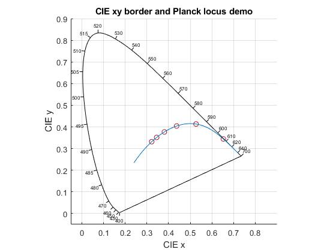

PlanckLocus
Navigate to: Home | Alphabetic list | Grouped list | Source code: PlanckLocus.m
Computes the Planck locus (i.e. the color points of blackbody radiators) in various color spaces, and provides helper functions to compute Judd lines.
Contents
Syntax
rv = PlanckLocus()
Input Arguments
none
Output Arguments
- rv: A struct with fields
- nT: scalar integer: the number of data points (1001)
- T: Array of double, length nT: the absolute temperatures
- invT: Array of double, length nT: the inverse absolute temperatures. Data points range from 500 K to 1e+11 K, equidistant in 1/T.
- x: Array of double, length nT: The CIE 1931 x coordinates.
- y: Array of double, length nT: The CIE 1931 y coordinates.
- u: Array of double, length nT: The CIE 1960 u coordinates.
- v: Array of double, length nT: The CIE 1960 v coordinates.
- up: Array of double, length nT: The CIE 1976 u' coordinates.
- vp: Array of double, length nT: The CIE 1976 v' coordinates.
- xy_func: Handle to function with signature rv2 = rv.xy_func(T), Input T: Vector of double: the absolute temperatures for which color coordinates shall be computed. Output rv2: Matrix of double, size [length/T),2]. The first/second column contains the CIE x/y coordinates corresponding to the values in T.
- uv_func: Handle to function with signature rv3 = rv.xy_func(T), Input T: Vector of double: the absolute temperatures for which color coordinates shall be computed. Output rv3: Matrix of double, size [length/T),2]. The first/second column contains the CIE 1960 u/v coordinates corresponding to the values in T.
- spline_u: Struct containing the interpolating spline interpolation data for CIE 1960 u as function of inverse absolute temperature. See Matlab's spline function for details on the fields and properties of this spline object, and Matlab's ppval function on how to use it.
- spline_v: Same for CIE 1960 v.
- spline_du_dinvT: Interpolating spline struct for the derivative of CIE 1906 u as function of inverse absolute temperature. This is the analytical derivative of the spline interpolating function modeling CIE 1960 u.
- spline_dv_dinvT: Same for CIE 1960 v. Together with spline_du_dinvT, this interpolating spline struct allows to compute tangents and normals to the Planck locus in CIE 1960 uv.
- JuddLine_func: Handle to function with signature rv4 = rv.JuddLine_func(T). Input T: Scalar real. Output rv4: struct with fields u, v (the CIE 1960 uv coordinates corresponding to T), and du, dv, the coordinates of the Judd line direction unit vector, towards green.
Algorithm
Computes the Planck blackbody spectra for all 1001 absolute temperatures, with their CIE 1931 XYZ values, and computes the other data fields. The Judd lines, along which the distance to the Planck locus is computed for correlated color temperature, are defined as the normal vectors to the Planck locus curve in the otherwise deprecated CIE 1960 color coordinate system. The function handles forward their arguments to Matlab's interp1 function. The spline interpolation data structures are computed using Matlab's spline function, and the analytical derivates using the ipp_deriv helper function of this library.
The time intensive computations are done only once per Matlab session. The results are stored in a persistent variable; subsequent calls will not incur the overhead.
See also
PlanckSpectrum, CIE1931_XYZ, CCT
Usage Example
function ExamplePlanckLocus() pl = PlanckLocus(); fh = figure();clf; PlotCIExyBorder('Figure',fh); hold on; T = [1000 2000 3000 4000 5000 6000]; xy = pl.xy_func(T); scatter(xy(:,1),xy(:,2)); plot(pl.x,pl.y); axis equal; grid on; axis([-0.05 0.9 -0.05 0.9]); xlabel('CIE x'); ylabel('CIE y'); title('CIE xy border and Planck locus demo') end